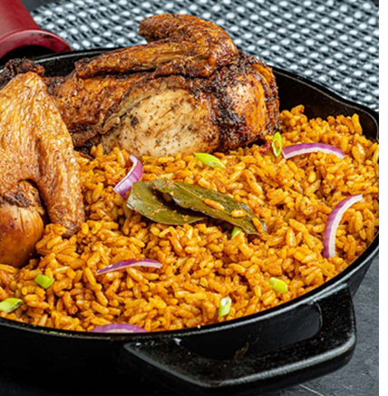

JOLLOF RICE RECIPE

Brief Introduction
Jollof is a popular and flavourful one-pot rice dish originating from West Africa, renowned for its vibrant red-orange colour and rich, spicy taste. It typically consists of rice cooked in a savory tomato-based sauce made with ingredients like tomatoes, onions, red peppers, garlic, and a blend of spices such as thyme, curry powder, bay leaves, and sometimes chili for heat.
The dish often includes protein, such as chicken, beef, fish, or shrimp, and may be accompanied by vegetables like carrots, peas, or bell peppers. Cooking methods and ingredients can vary widely by country, with notable variations in Nigeria, Ghana, Senegal, and other West African nations. Nigerian Jollof, for example, is known for its bold and smoky flavor, often achieved by allowing the rice to slightly caramelize at the bottom of the pot.
Jollof is more than a meal; it's a cultural centerpiece served at celebrations, parties, and family gatherings, often sparking friendly debates about which country's version is the best.
Ingredients Needed to Prepare Jollof
Base Ingredients
- Rice: Long-grain parboiled rice (e.g., basmati or golden sella, for fluffiness).
- Tomatoes: Fresh or canned.
- Red Bell Peppers: For sweetness and colour.
- Onions: White or red onions, used in the base and for garnishing.
- Tomato Paste: To enhance the tomato flavour and colour.
- Vegetable Oil: For frying the sauce.
Seasonings and Spices
- Garlic: Minced or blended
- Thyme: Dried thyme for aroma.
- Curry Powder: For extra flavour.
- Bay Leaves: Adds depth to the dish.
- Paprika: For smokiness and colour (optional).
- Stock Cubes: Chicken or beef bouillon cubes.
- Salt: To taste.
- Cayenne Pepper or Chili Powder: For heat (adjust to preference).
Proteins (Optional)
- Chicken, Beef, Fish, or Shrimp: Cooked and incorporated or served on the side.
Additional Ingredients
- Water or Stock (Chicken or Beef): For cooking the rice.
- Carrots, Peas, or Green Beans: For a touch of vegetables (optional).
- Scotch Bonnet or Habanero Pepper: For a spicy kick.
- Green Bell Peppers: For garnishing and extra crunch.
Optional Garnish
- Plantains: Fried plantains (dodo) served on the side.
- Salad: A fresh vegetable side salad to complement the dish.
Steps Required to Prepare Jollof
Step 1: Prepare Ingredients
- Wash and parboil the rice: Rinse the rice in cold water to remove excess starch, then parboil it (cook halfway) in boiling water for about 5-10 minutes. Drain and set aside.
- Blend the base: Blend fresh tomatoes, red bell peppers, Scotch bonnet (or habanero), and a bit of onion into a smooth puree. Set aside.
- Chop the onions: Dice some onions for the sauce.
Step 2: Make the Tomato Sauce
- Heat oil in a large pot on medium heat.
- Sauté onions: Fry the chopped onions until translucent.
- Add tomato paste: Stir in tomato paste and fry for 2-3 minutes to remove the raw taste.
- Add the blended mixture: Pour in the blended tomato and pepper mix. Cook, stirring occasionally, until the sauce thickens and the oil starts to separate (about 15-20 minutes).5-10
Step 3: Season the Sauce
- Add thyme, curry powder, paprika, bay leaves, and stock cubes.
- Add a pinch of salt and a dash of cayenne pepper or chili powder (optional).
- Mix thoroughly and allow the sauce to simmer for 5 minutes.
Step 4: Add Rice
- Mix the rice into the sauce: Add the parboiled rice to the pot and stir until it is fully coated in the sauce.
- Add stock or water: Pour enough chicken or beef stock (or water) to just barely cover the rice.
- Cover and cook: Reduce the heat to low, cover the pot with a tight-fitting lid, and let the rice cook by steaming. This ensures it absorbs the flavors without becoming mushy.
Step 5: Monitor and Stir
- After about 15 minutes, check the rice and stir gently to prevent sticking or burning. Add a splash of water or stock if necessary.
- Cover again and allow the rice to cook until soft, fluffy, and fully infused with the sauce (another 10-15 minutes).
Step 6: Add Garnish
- Toss in sliced vegetables like carrots, peas, or green bell peppers (optional) during the last few minutes of cooking for a fresh crunch.
- Adjust seasoning with salt or spices as needed.
Step 7: Serve
- Serve hot with your choice of protein (fried chicken, beef, fish, or shrimp).
- Garnish with fried plantains (dodo) or a side salad.